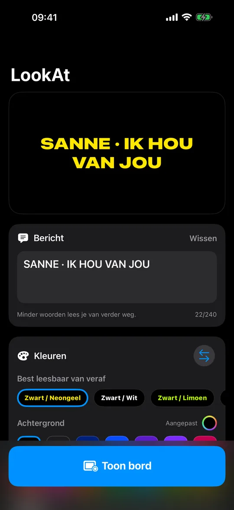
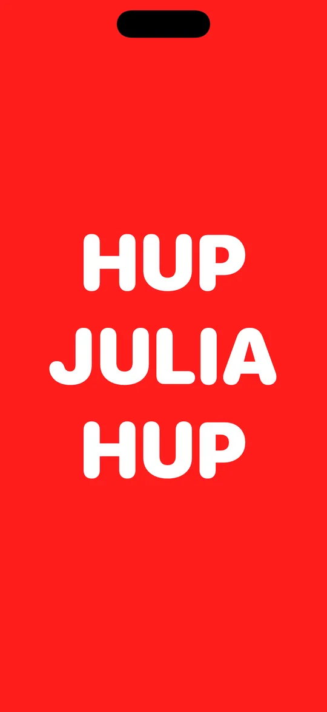
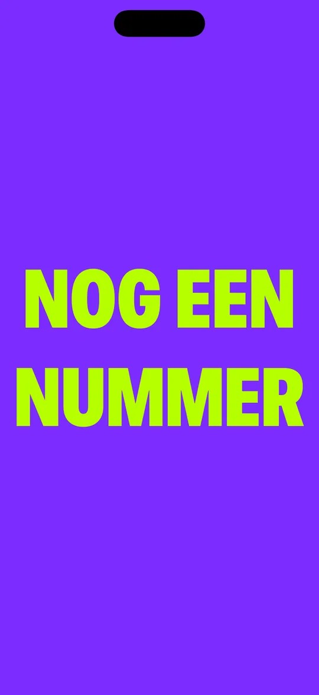
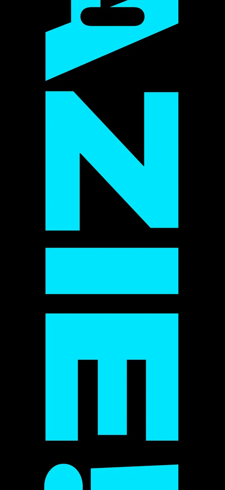

Kleuren, gemeten
Paren die je
echt leest
Echt WCAG-contrast, gecontroleerd voor het licht uitgaat.
Je telefoon omhoog
Typ het, kies twee kleuren, omhoog ermee.
Houd je telefoon omhoog en word gezien. LookAt maakt van het scherm een bord met letters die groot genoeg zijn om achter in de zaal te lezen: typ je bericht, kies twee kleuren, omhoog ermee.
Gratis · iPhone en iPad · iOS 18 of nieuwer
Afstand win je met letterhoogte en contrast, niet met helderheid alleen. LookAt meet elk lettertype op kapitaalhoogte, zodat de letters altijd hetzelfde deel van het scherm vullen, welk lettertype je ook kiest. En de app meet het echte WCAG-contrast tussen je twee kleuren: hij waarschuwt je voordat je een donkere zaal in loopt met een combinatie die niemand kan lezen, en zet er een gloed omheen als het paar echt op het randje is.

Kleuren, gemeten
Echt WCAG-contrast, gecontroleerd voor het licht uitgaat.
Dotmatrix
Geen lettertype: de letters zijn los getekende lampen.

15 achtergronden · 14 tekstkleuren
Zeven lettertypes, allemaal gekozen op afstand.

Schuiven · Vast · Knipperen
Tot 240 tekens, op de snelheid die jij kiest.

Tekstgrootte
Zet de grootte op 100%: de letters lopen enorm.
Geen account. Geen advertenties. Geen tracking. Helemaal geen netwerk: LookAt heeft nooit om een verbinding gevraagd, dus wat je typt verlaat je telefoon niet.
Een kanttekening over wat een telefoon kan: een scherm is fel, maar het is geen stadionscherm. In direct zonlicht, of van meer dan een paar tientallen meters, verliest zelfs het beste kleurenpaar. LookAt is op zijn best binnen, na zonsondergang en midden in de menigte — aankomsthallen, concerten, finishlijnen, schoolvoorstellingen.
Concert vanavond en wil je een nummer aanvragen? Sta je middenin de menigte? Typ het in LookAt, houd je telefoon omhoog en laat je zien.
Gratis · iPhone en iPad · iOS 18 of nieuwer